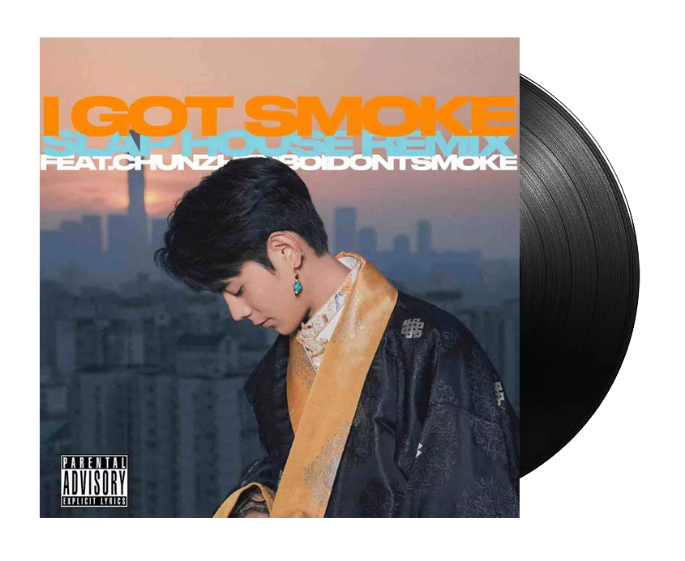
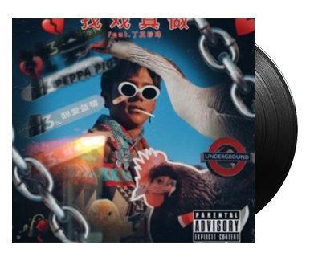
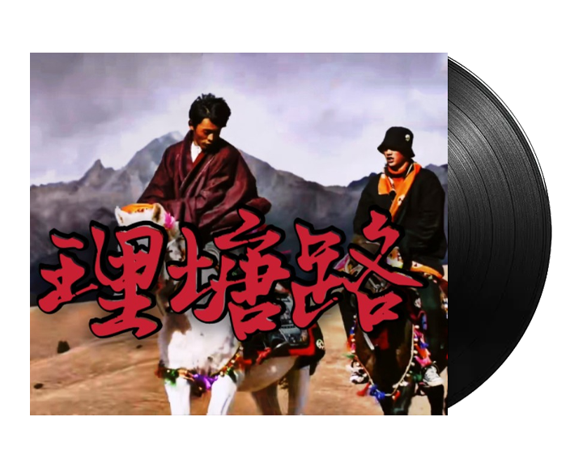

21 年的夏天找找用《Zood》开创了一个全新的时代，独特的风格，抽象的腔调，让人在听到的一瞬宛如哥伦布发现新大陆一般，但时至今日，在《Zood》诞世的四百多天里，它就像一座让人向往却又望而生畏的山峰，尽管挑战者们蜂拥而至，可真正能够越其峰芒的又有谁人？
但今天，历史将成为过去。如果说《Zood》是手工作业的话，那么这首《I Got Smoke》就绝对称得上是工业革命，无可匹敌的填词，毫不糊弄的时长，恰到好处的 MV，十年烟龄的腔调，更强的攻击性，作者醉后的录制更是为该曲添上了一笔犹如王羲之随手兰亭序般的传奇色彩，正如燃佬自己所说的一样，他们也许能杀死他的播放量，但杀不死他这个创作者，真正的经典必将在时间的长河中永世长存，《Zood》开创了时代，而这首《I Got Somke》超越了时代！

50 Cent
“他的说唱就像当年的我，年少轻狂且叛逆愤怒、内心炙热，更厉害的是，他甚至同时道出了深刻的禅意和人生哲理，这意境和功力令我嫉妒和惭愧。”
EMINEM
“很多人都问过我《RAP GOD》是不是在说我自己，在今天我听完《I got smoke》后可以负责任的说：这首歌描述的是这个叫丁真的中国小伙子！”

Taylor Swift
“相比起丁真的《I got smoke》，我的那些所谓风靡世界的音乐简直太小儿科了。”
往期精选

如果说《1376心想事成》是西藏人民给祖国华夏美好的祝愿
那么《Zood》就是对于丁真文化最好的一个出口。
这首歌不仅仅是对于24kGoldn的旋律的一种传承，一种文化的传承
还有加入了很多传承的攒在。
世界级说唱大师Jay-Z是这么评价的：
“把伟大说唱歌手的歌词从伴奏里抽离出来，刻在墙上也依然是非常精彩的诗歌。”
这首作品真正达到了词、曲、唱的高水准均衡
The Kid LAROI、贾斯汀·比伯原曲的专业背书保证了歌曲的旋律性和高级感。
拿捏得恰到好处的auto-tune又使其唱腔在像“丁真”的前提下，增添了一丝优雅与神秘。

我骑着小马珍珠来到理塘县
你可能还不清楚我是谁
骑着小马珍珠来到理塘县
你可能还不清楚我是谁
2022 ❤ 理塘 经典
Power by DreamWeaver